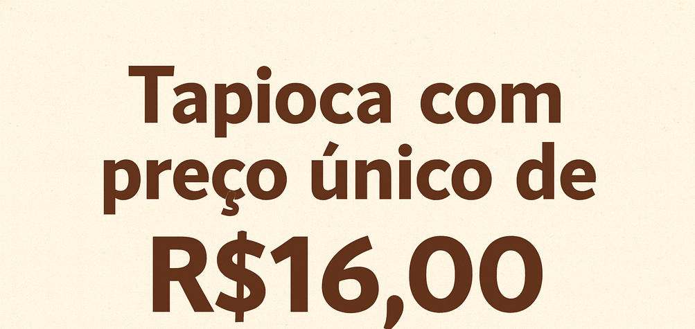
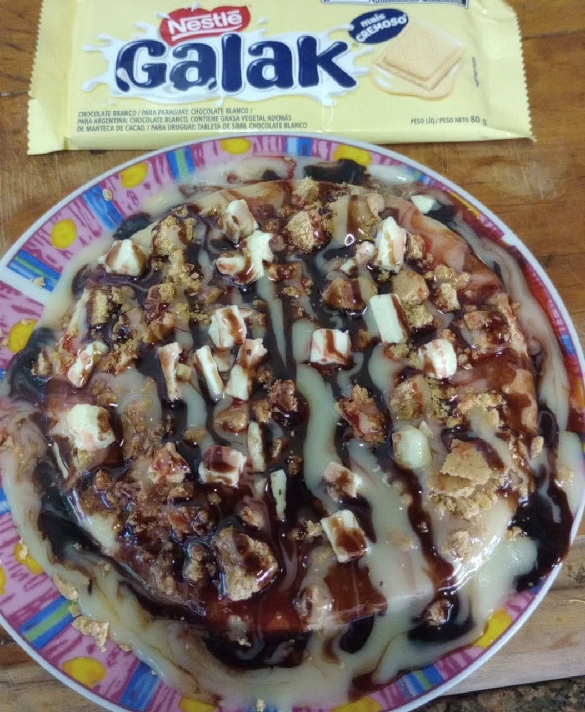
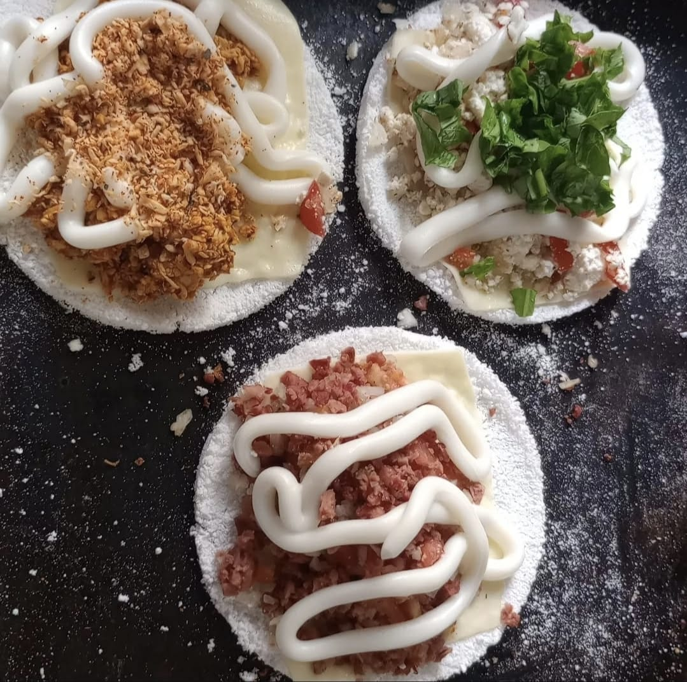

2<!DOCTYPE html>
<html lang="pt-BR">
<head>
    <meta charset="UTF-8" />

    <meta name="viewport" content="width=device-width, initial-scale=1" />
    
    <!-- Titulo da Aba e icone -->
    <title>Tapioca da Rosi</title>
    <link rel="icon" type="image/x-icon" href="img/favicon.ico">

    <!-- Link para o CSS e para o Font Awasome-->
    <link rel="stylesheet" href="style.css" />
    <link rel="stylesheet" href="//use.fontawesome.com/releases/v6.7.2/css/all.css">
</head>
<body>
   
<div id="folha">
    <header>
        <!--Div para controle do título,
        subtitulo e logo do header -->
        <div>
        <h1>Tapioca da Rosi</h1>
        <p>Na UNESP - IBILCE - São José de Rio Preto</p>
        </div>
        
    </header>

    <section id="menu">
        <h2 id="menu_h2">Cardápio</h2>

    <div class="carrossel">
       <div class="carrossel-track">
        
        
        
        
       </div>

       <button class="carrossel-btn prev">&#10094;</button>
       <button class="carrossel-btn next">&#10095;</button>
    </div>

        <!--Menu Tapiocas Salgadas-->
        <h2 id="centro">Tapiocas Salgadas</h2>
        <div id="menu-salgado" class="menu-container"></div>

        <!--Menu Tapiocas Doces-->
        <h2 id="centro">Tapiocas Doces</h2>
        <div id="menu-doces" class="menu-container"></div>

        <!-- Menu Bebidas -->
        <h2 id="centro">Bebidas</h2>
        <div id="menu-bebidas" class="menu-container"></div>
    </section>

    
    <script src="script.js"></script>
</div>
</body>
</html>